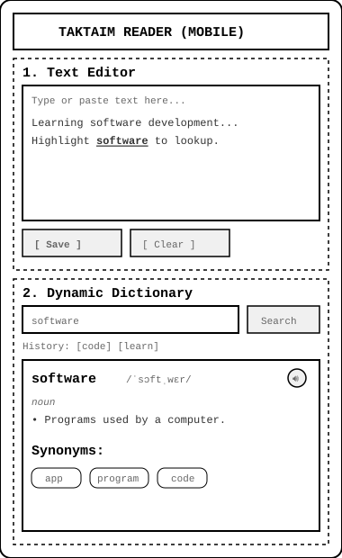
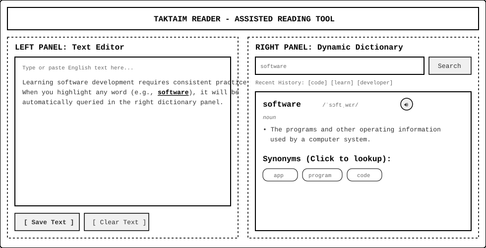

Site Name
Site Name: TakTaim Reader
Reason for Selection: The name originates from "Talk Time" (rendered phonetically as TakTaim), representing dedicated time for oral practice, reading, and active vocabulary building. It signifies an interactive space designed specifically for English language learning.
Optional domain availability: https://talktimeinstitute.com/
Logo Version:
Site Purpose
The site provides an interactive, two-panel web application for reading assistance. It provides a text editor where users can paste English articles, stories, or study materials on the left, alongside an integrated dynamic dictionary on the right.
The service enables instant lookup of highlighted words through selection, offering definitions, IPA phonetic transcriptions, interactive clickable synonyms, and audio pronunciation without breaking reading flow or requiring external browser tabs.
Target Audience Scenarios
- Scenario 1: How can I listen to the correct native pronunciation of an unfamiliar word while reading an article without leaving my current page?
- Scenario 2: Is there a way to select a word in my text and automatically discover its synonyms to expand my writing vocabulary?
- Scenario 3: How can I save the text I am currently reading and my word search history so that I don't lose my progress when I close my browser?
Color Scheme
The selected color scheme balances high contrast for extended reading comfort with vibrant blue accents for interactive elements. This exact HTML document exclusively applies these defined colors:
#3182ce
#1a202c
#4a5568
#f7fafc
- Primary Blue (#3182ce): Used for primary buttons, highlighted active words, clickable synonym chips, link elements, and section subheadings.
- Dark Navy (#1a202c): Used for main headings (H1, H2) and primary body text to guarantee maximum contrast and readability (WCAG compliance).
- Slate Gray (#4a5568): Used for secondary text, labels, border outlines, and metadata information.
- Off-White (#f7fafc): Used for background panels, card containers, input fields, and wireframe containers to visually separate the text editor from the dictionary section.
Typography
The project utilizes two web fonts loaded from Google Fonts:
- Poppins (Sans-Serif, Bold/Semi-Bold): Selected for all major headings (H1, H2, H3). Its modern geometric structure gives titles clarity and visual hierarchy.
- Open Sans (Sans-Serif, Regular/Semi-Bold): Selected for body text, paragraph content, dictionary definitions, input fields, and button labels. It is optimized for high legibility across print and web viewports.
Wireframe
Below are the responsive layouts for both small (mobile) and large (desktop/tablet) viewports designed as black and white wireframe sketches.
Small Viewport (Mobile Layout)

Stacked single-column view: Header > Text Editor > Dynamic Dictionary
Large Viewport (Desktop/Tablet Layout)

Two-column layout: Text Editor (Left 50%) | Dynamic Dictionary (Right 50%)